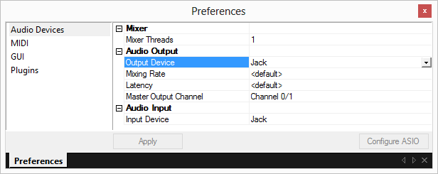
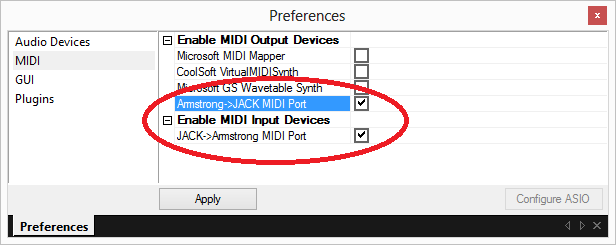
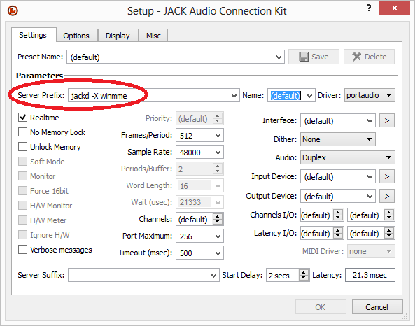

JACK is a mechanism to route audio and MIDI in real-time between applications from different vendors. This solves the same problem as Rewire.
If JACK is installed, it can be selected in Preferences -> Audio, and also from Preferences -> MIDI. The MIDI devices work only if the JACK audio driver is selected.
 
Buzé initializes JACK with 16 audio output channels and 16 audio input channels (16 + 16 audio ports). The channels are automatically routed to the physical JACK audio ports, and leaving any remaining channels for aux.
Buzé initializes JACK with a MIDI input port and a MIDI output port. Note these ports are not routed in JACK by default.
Make sure to "-X winmme" on the jackd startup options:

On a basic level, an application needs only to support ASIO in order to work with JACK: When installing JACK on Windows, it installs a new virtual JackRouter ASIO device by default. Any applications using this audio driver, can send and receive audio from other applications connected to JACK.
The JackRouter ASIO device by itself does not deal with MIDI and synchronization, and will require virtual MIDI cables or a JACK-enabled VST.